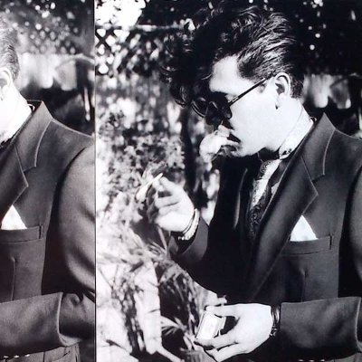

| Tito L. Echevarria |
|---|
| Resume / About Me |
|  |
| Born and rainsed in Los Angeles CA, I have always been drawn to the art world. Photography, film making, and music have always been a passion of mine. Currently based in New York City, I am active in graphic design, commercial photography and music video direction. |